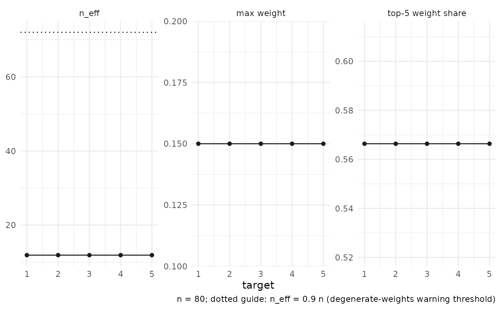

autoplot() on a diagnostics() frame draws three facets across
targets: effective sample size (n_eff, with a dotted guide at
0.9 * n, the degenerate-weights warning threshold), the maximum
weight, and the top-5 weight share. plot() prints the same panel.
Usage
autoplot.rdistnn_diagnostics(object, ...)
# S3 method for class 'rdistnn_diagnostics'
plot(x, ...)Arguments
- object
A
rdistnn_diagnosticsobject fromdiagnostics().- ...
Ignored; reserved for future options.
- x
A
rdistnn_diagnosticsobject (for theplot()method).
Examples
if (requireNamespace("ggplot2", quietly = TRUE)) {
set.seed(1)
n <- 80
x_mat <- matrix(rnorm(n * 2), n, 2)
y_vec <- x_mat[, 1] + rnorm(n, sd = 0.3)
fit <- np_dnn(
X = x_mat, X0 = cbind(seq(-1, 1, length.out = 5), 0), Y = y_vec,
k = 1L, s = 12L, se = FALSE
)
ggplot2::autoplot(diagnostics(fit))
}
